The Beatles 1965 素材包REFERENCE COLLECTION / 2026-11-01
The Beatles 1965 素材包
四位角色的原片画面、原始动画稿照片、设定复刻与 AI 补充图。先用历史资料确定身份与服装，再用透明补充图扩展动作。
每人 12 个全身姿势，另有左90°、左45°、正面、右45°、右90°五角度头部参考。新增原片截图标有片源时间点。背面和部分动作是推演参考，原片文件尺寸不等于真实高清画质。
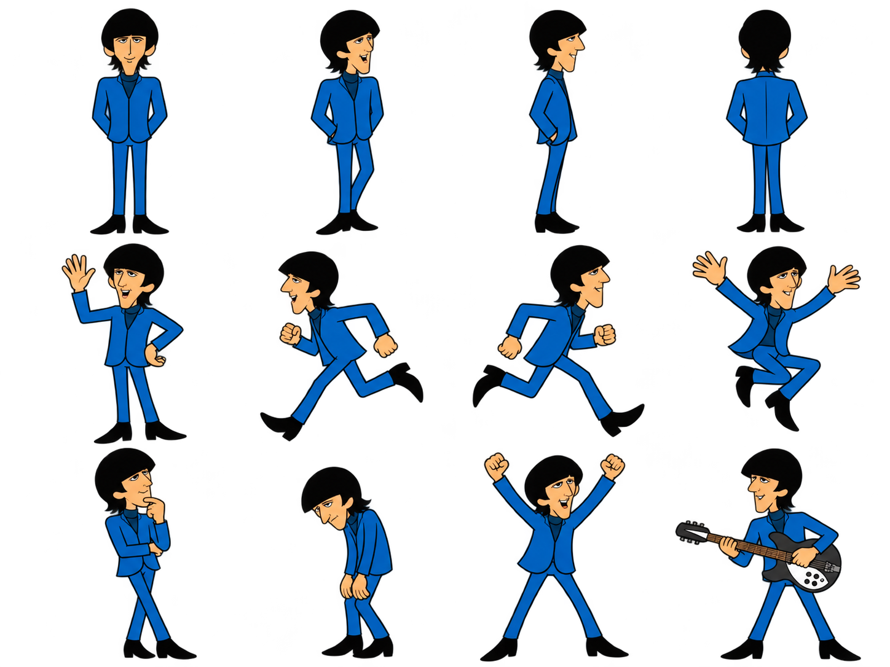
George · 12 姿势透明补充图
AI 生成补充 · 1448 × 1086
4 列 × 3 行；新生成参考图，非原片截图或可直接导入的精灵图。下载原尺寸文件 · AI 生成 · 查看提示词
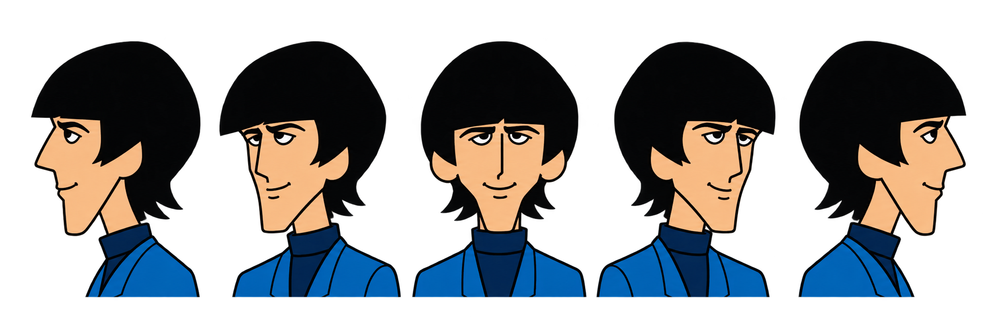
George · 五角度头部参考
AI 生成补充 · 2168 × 725
左90°、左45°、正面、右45°、右90°。45°呈现双眼，纯侧面呈现单眼；角度为生成目标，不是原片相机测量。下载原尺寸文件 · AI 生成 · 查看提示词
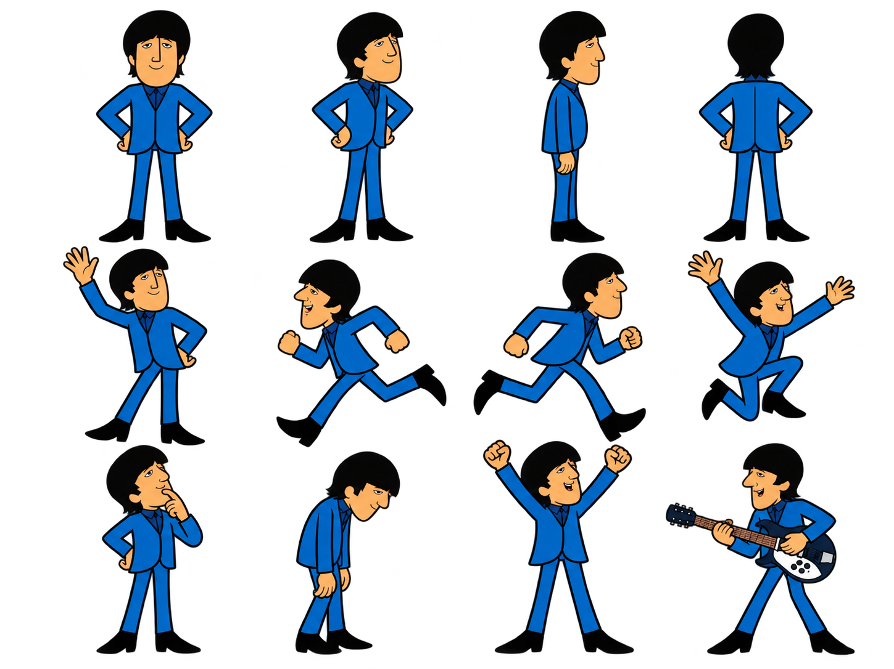
John · 12 姿势透明补充图
AI 生成补充 · 1449 × 1086
4 列 × 3 行；新生成参考图，非原片截图或可直接导入的精灵图。下载原尺寸文件 · AI 生成 · 查看提示词
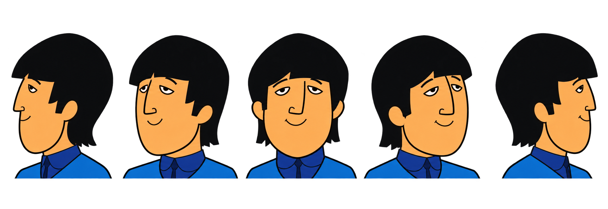
John · 五角度头部参考
AI 生成补充 · 2135 × 736
左90°、左45°、正面、右45°、右90°。45°呈现双眼，纯侧面呈现单眼；角度为生成目标，不是原片相机测量。下载原尺寸文件 · AI 生成 · 查看提示词
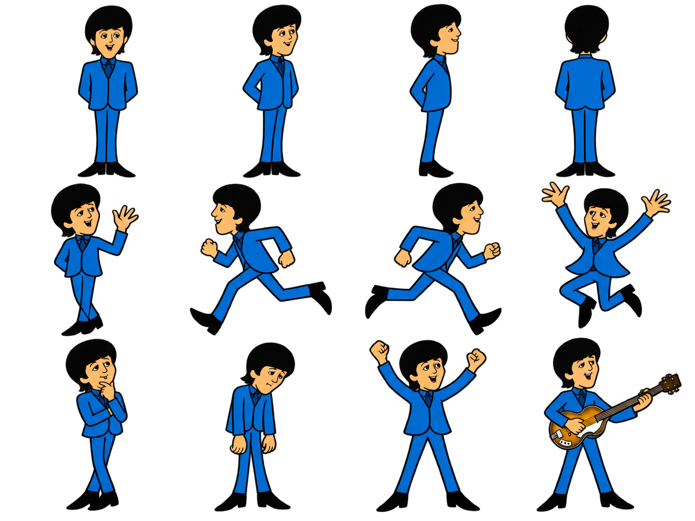
Paul · 12 姿势透明补充图
AI 生成补充 · 1448 × 1086
4 列 × 3 行；新生成参考图，非原片截图或可直接导入的精灵图。下载原尺寸文件 · AI 生成 · 查看提示词
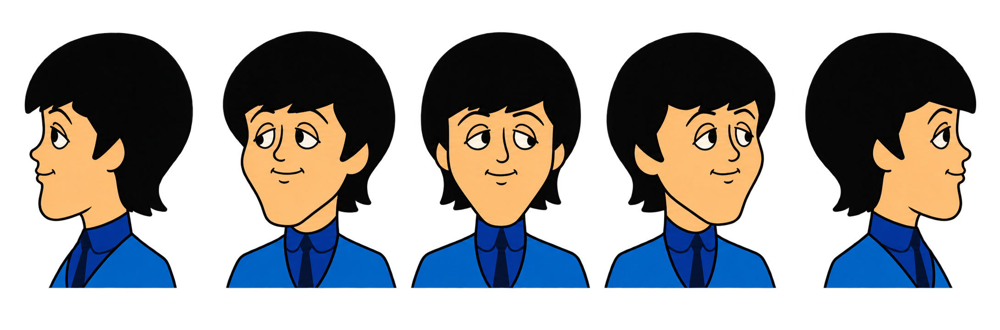
Paul · 五角度头部参考
AI 生成补充 · 2182 × 721
左90°、左45°、正面、右45°、右90°。45°呈现双眼，纯侧面呈现单眼；角度为生成目标，不是原片相机测量。下载原尺寸文件 · AI 生成 · 查看提示词
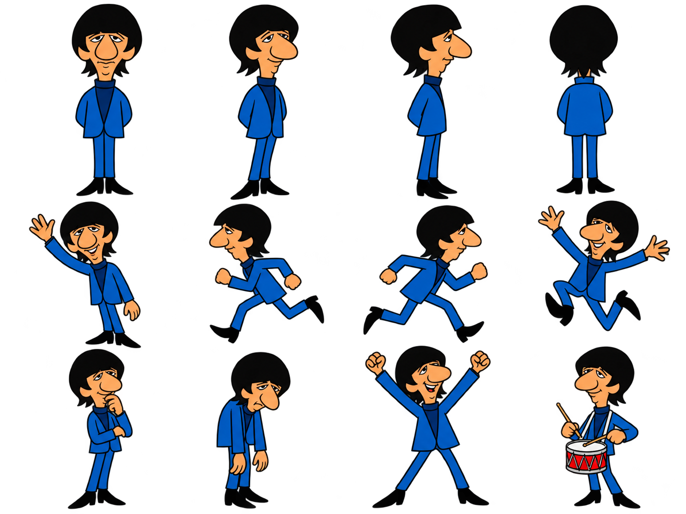
Ringo · 12 姿势透明补充图
AI 生成补充 · 1448 × 1086
4 列 × 3 行；新生成参考图，非原片截图或可直接导入的精灵图。下载原尺寸文件 · AI 生成 · 查看提示词
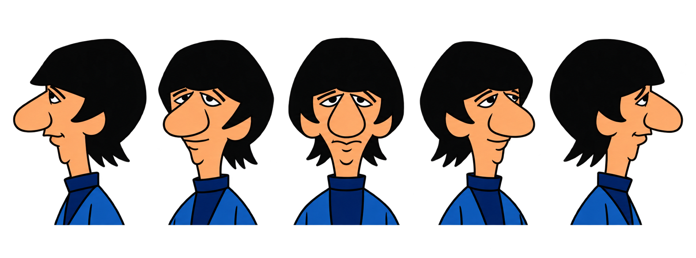
Ringo · 五角度头部参考
AI 生成补充 · 2059 × 764
左90°、左45°、正面、右45°、右90°。45°呈现双眼，纯侧面呈现单眼；角度为生成目标，不是原片相机测量。下载原尺寸文件 · AI 生成 · 查看提示词
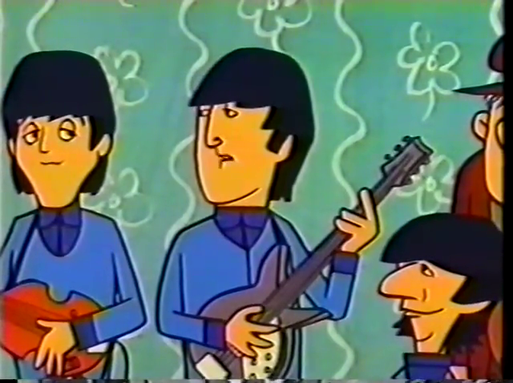
Paul、John 与 Ringo · 演奏与脸型对照 · 02:08.128
原片逐帧截图 · 640 × 478
保留640×478解码画面；片源时间点 02:08.128，未放大、锐化或重绘。视角为目测分类，非精确相机测量。下载原尺寸文件 · 查看来源网页
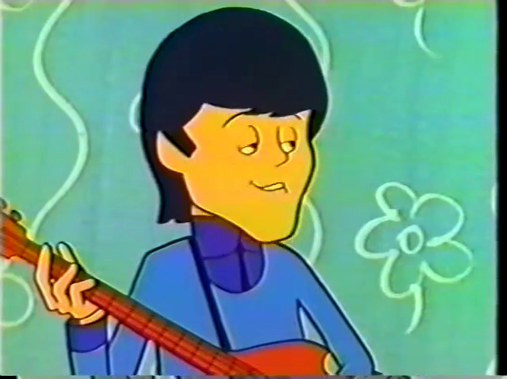
Paul · 四分之三脸型与短鼻 · 02:40.160
原片逐帧截图 · 640 × 478
保留640×478解码画面；片源时间点 02:40.160，未放大、锐化或重绘。视角为目测分类，非精确相机测量。下载原尺寸文件 · 查看来源网页
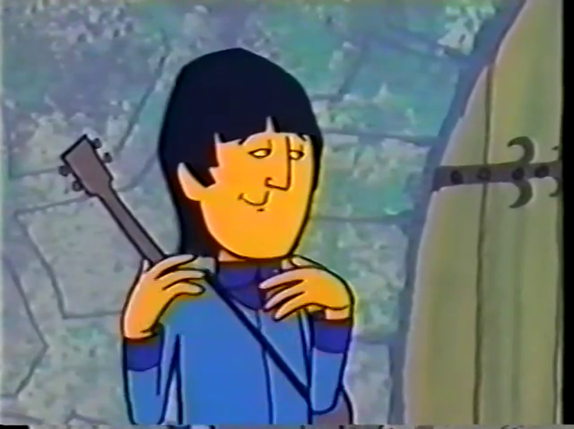
John · 正面偏转与宽下颌 · 02:56.176
原片逐帧截图 · 640 × 478
保留640×478解码画面；片源时间点 02:56.176，未放大、锐化或重绘。视角为目测分类，非精确相机测量。下载原尺寸文件 · 查看来源网页
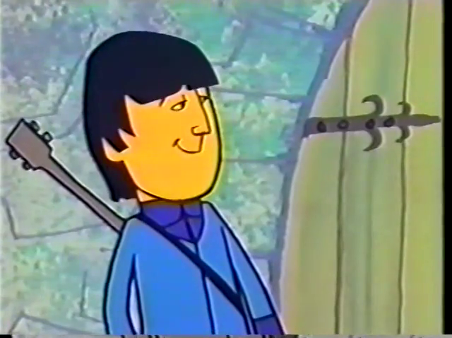
John · 右向四分之三视角 · 03:04.184
原片逐帧截图 · 640 × 478
保留640×478解码画面；片源时间点 03:04.184，未放大、锐化或重绘。视角为目测分类，非精确相机测量。下载原尺寸文件 · 查看来源网页
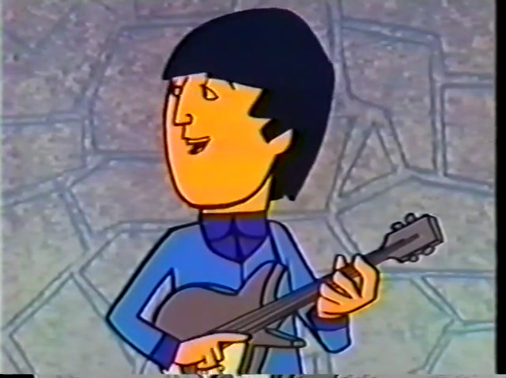
John · 左向四分之三视角 · 04:08.248
原片逐帧截图 · 640 × 478
保留640×478解码画面；片源时间点 04:08.248，未放大、锐化或重绘。视角为目测分类，非精确相机测量。下载原尺寸文件 · 查看来源网页
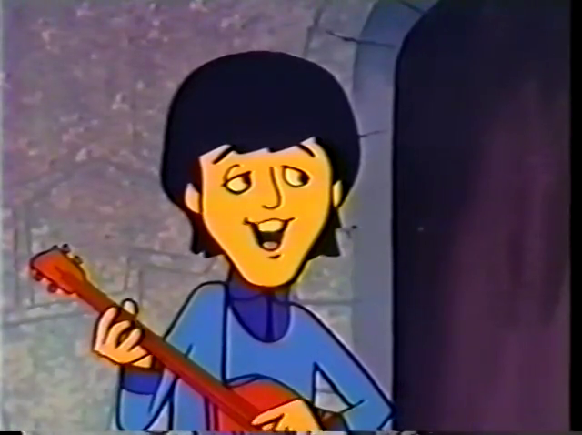
Paul · 正面演奏特写 · 05:52.352
原片逐帧截图 · 640 × 478
保留640×478解码画面；片源时间点 05:52.352，未放大、锐化或重绘。视角为目测分类，非精确相机测量。下载原尺寸文件 · 查看来源网页
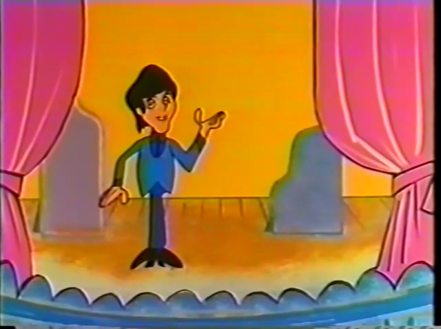
Paul · 全身与手势 · 07:20.440
原片逐帧截图 · 640 × 478
保留640×478解码画面；片源时间点 07:20.440，未放大、锐化或重绘。视角为目测分类，非精确相机测量。下载原尺寸文件 · 查看来源网页
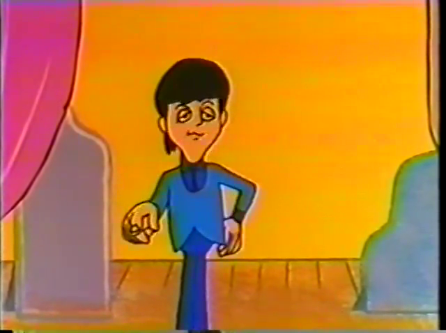
Paul · 正面五官比例 · 07:28.448
原片逐帧截图 · 640 × 478
保留640×478解码画面；片源时间点 07:28.448，未放大、锐化或重绘。视角为目测分类，非精确相机测量。下载原尺寸文件 · 查看来源网页
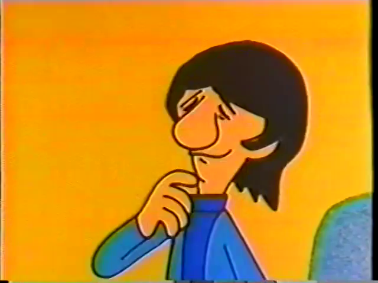
Ringo · 左向四分之三特写 · 07:36.456
原片逐帧截图 · 640 × 478
保留640×478解码画面；片源时间点 07:36.456，未放大、锐化或重绘。视角为目测分类，非精确相机测量。下载原尺寸文件 · 查看来源网页
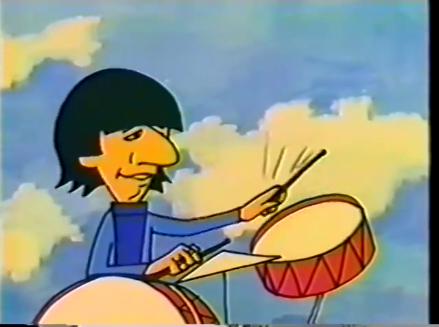
Ringo · 右向演奏与鼻子轮廓 · 08:56.537
原片逐帧截图 · 640 × 478
保留640×478解码画面；片源时间点 08:56.537，未放大、锐化或重绘。视角为目测分类，非精确相机测量。下载原尺寸文件 · 查看来源网页
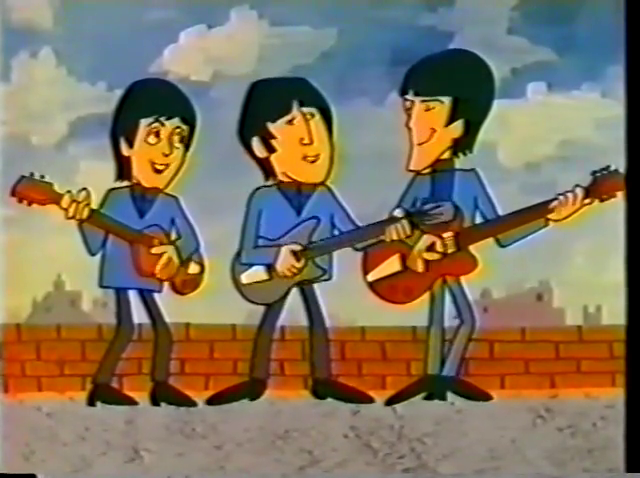
Paul、John、George · 三人演奏对照 · 09:12.553
原片逐帧截图 · 640 × 478
保留640×478解码画面；片源时间点 09:12.553，未放大、锐化或重绘。视角为目测分类，非精确相机测量。下载原尺寸文件 · 查看来源网页
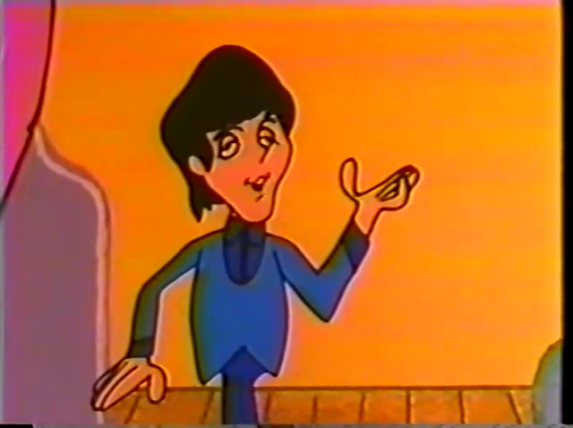
Paul · 四分之三特写与手势 · 10:16.617
原片逐帧截图 · 640 × 478
保留640×478解码画面；片源时间点 10:16.617，未放大、锐化或重绘。视角为目测分类，非精确相机测量。下载原尺寸文件 · 查看来源网页
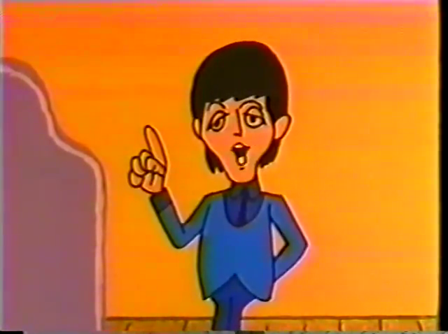
Paul · 正面说话表情 · 10:24.625
原片逐帧截图 · 640 × 478
保留640×478解码画面；片源时间点 10:24.625，未放大、锐化或重绘。视角为目测分类，非精确相机测量。下载原尺寸文件 · 查看来源网页
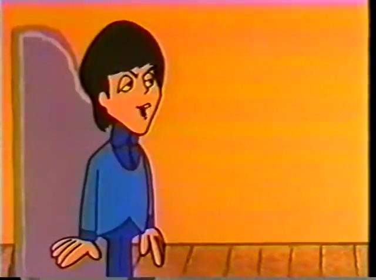
Paul · 另一四分之三视角 · 10:56.657
原片逐帧截图 · 640 × 478
保留640×478解码画面；片源时间点 10:56.657，未放大、锐化或重绘。视角为目测分类，非精确相机测量。下载原尺寸文件 · 查看来源网页
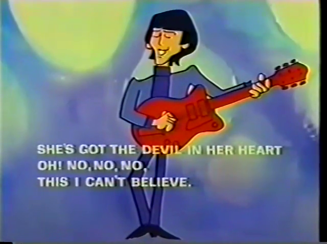
George · 左向四分之三与长脸 · 12:24.745
原片逐帧截图 · 640 × 478
保留640×478解码画面；片源时间点 12:24.745，未放大、锐化或重绘。视角为目测分类，非精确相机测量。下载原尺寸文件 · 查看来源网页
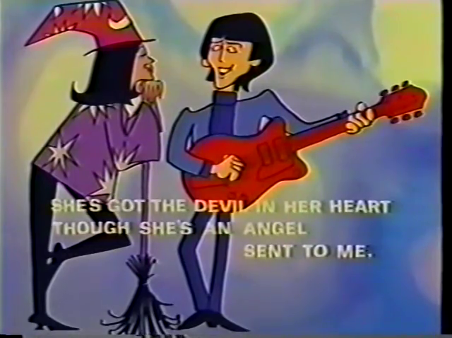
George · 左向说话与演奏 · 12:56.777
原片逐帧截图 · 640 × 478
保留640×478解码画面；片源时间点 12:56.777，未放大、锐化或重绘。视角为目测分类，非精确相机测量。下载原尺寸文件 · 查看来源网页
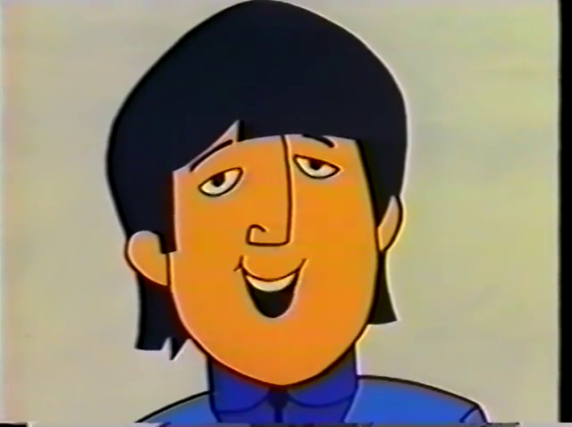
John · 正面脸部大特写 · 14:24.865
原片逐帧截图 · 640 × 478
保留640×478解码画面；片源时间点 14:24.865，未放大、锐化或重绘。视角为目测分类，非精确相机测量。下载原尺寸文件 · 查看来源网页
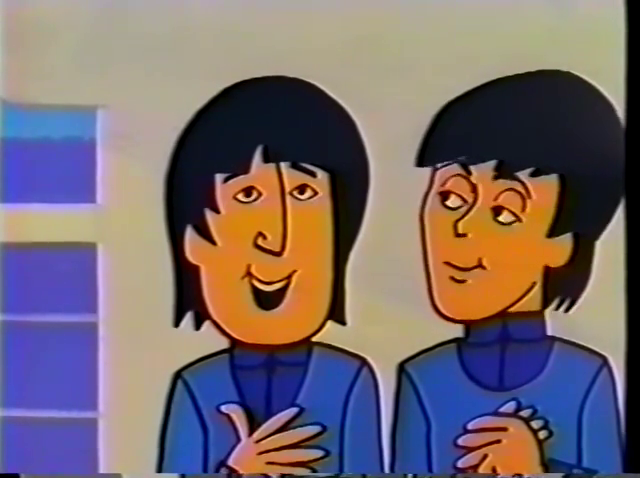
John 与 Paul · 正面和四分之三对照 · 14:32.873
原片逐帧截图 · 640 × 478
保留640×478解码画面；片源时间点 14:32.873，未放大、锐化或重绘。视角为目测分类，非精确相机测量。下载原尺寸文件 · 查看来源网页
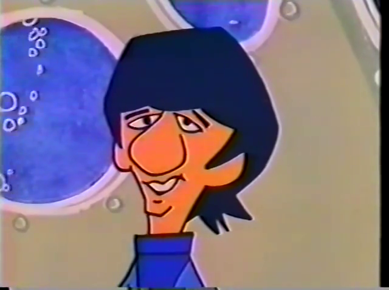
Ringo · 正面偏转与水滴形大鼻子 · 15:12.913
原片逐帧截图 · 640 × 478
保留640×478解码画面；片源时间点 15:12.913，未放大、锐化或重绘。视角为目测分类，非精确相机测量。下载原尺寸文件 · 查看来源网页
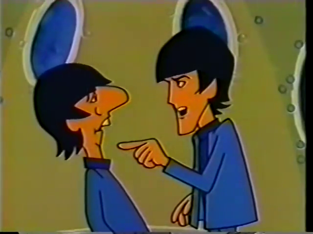
Ringo 与 George · 相向侧脸对照 · 15:28.929
原片逐帧截图 · 640 × 478
保留640×478解码画面；片源时间点 15:28.929，未放大、锐化或重绘。视角为目测分类，非精确相机测量。下载原尺寸文件 · 查看来源网页
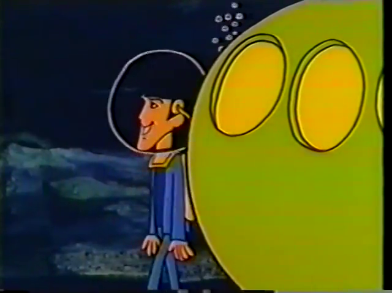
George · 左向侧面全身 · 15:36.937
原片逐帧截图 · 640 × 478
保留640×478解码画面；片源时间点 15:36.937，未放大、锐化或重绘。视角为目测分类，非精确相机测量。下载原尺寸文件 · 查看来源网页
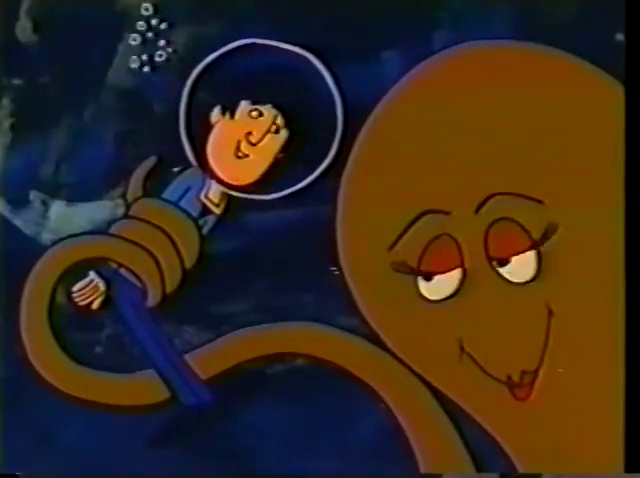
Paul · 潜水头盔内四分之三脸型 · 16:00.961
原片逐帧截图 · 640 × 478
保留640×478解码画面；片源时间点 16:00.961，未放大、锐化或重绘。视角为目测分类，非精确相机测量。下载原尺寸文件 · 查看来源网页
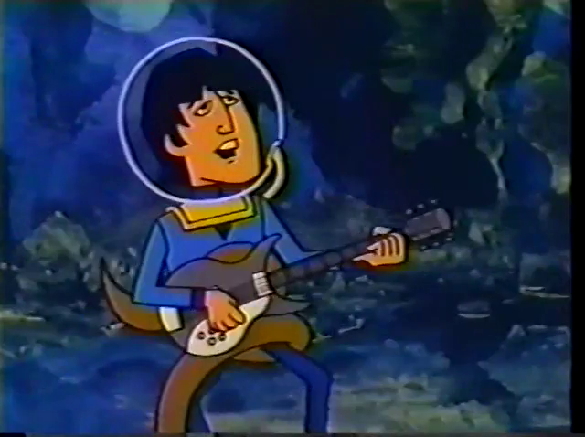
John · 潜水头盔内右向脸型 · 16:24.985
原片逐帧截图 · 640 × 478
保留640×478解码画面；片源时间点 16:24.985，未放大、锐化或重绘。视角为目测分类，非精确相机测量。下载原尺寸文件 · 查看来源网页
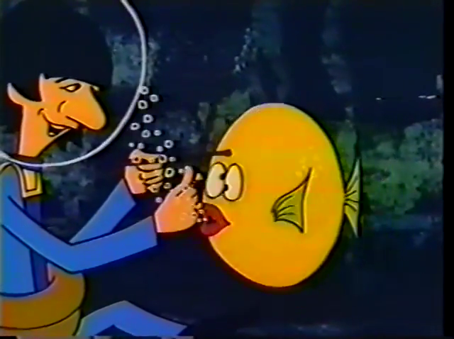
George · 俯视侧脸局部 · 16:32.993
原片逐帧截图 · 640 × 478
保留640×478解码画面；片源时间点 16:32.993，未放大、锐化或重绘。视角为目测分类，非精确相机测量。下载原尺寸文件 · 查看来源网页
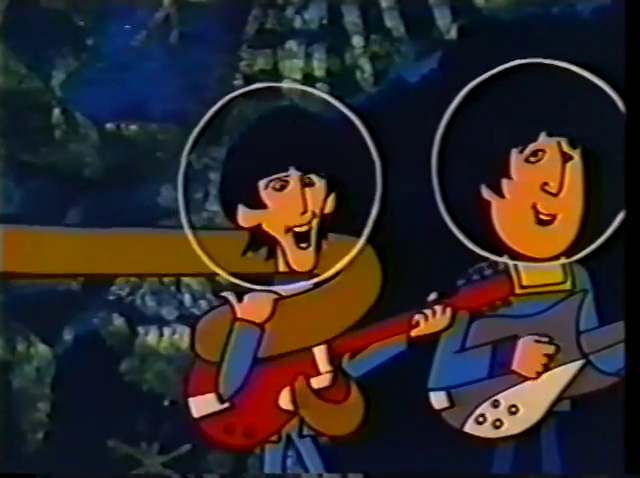
George 与 John · 四分之三轮廓对照 · 17:05.025
原片逐帧截图 · 640 × 478
保留640×478解码画面；片源时间点 17:05.025，未放大、锐化或重绘。视角为目测分类，非精确相机测量。下载原尺寸文件 · 查看来源网页
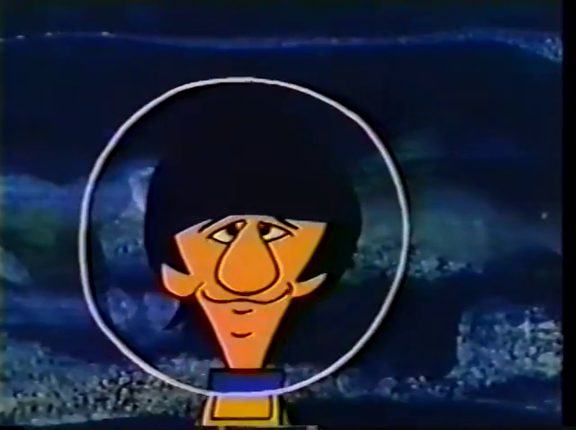
Ringo · 正面脸部特写 · 17:21.041
原片逐帧截图 · 640 × 478
保留640×478解码画面；片源时间点 17:21.041，未放大、锐化或重绘。视角为目测分类，非精确相机测量。下载原尺寸文件 · 查看来源网页
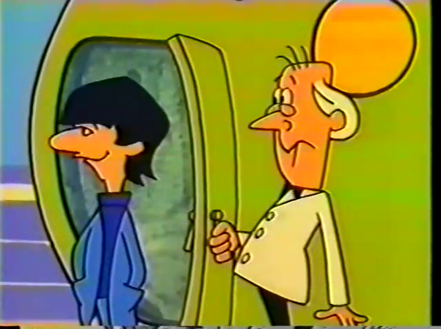
Ringo · 左向纯侧面 · 18:01.081
原片逐帧截图 · 640 × 478
保留640×478解码画面；片源时间点 18:01.081，未放大、锐化或重绘。视角为目测分类，非精确相机测量。下载原尺寸文件 · 查看来源网页
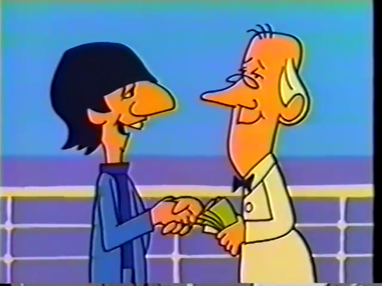
Ringo · 右向纯侧面 · 18:17.097
原片逐帧截图 · 640 × 478
保留640×478解码画面；片源时间点 18:17.097，未放大、锐化或重绘。视角为目测分类，非精确相机测量。下载原尺寸文件 · 查看来源网页

四人全身 · 宣传赛璐珞稿
宣传动画稿照片 · 1549 × 1149
保留下载文件的像素尺寸；未做放大或 AI 修复。下载原尺寸文件 · 查看来源网页
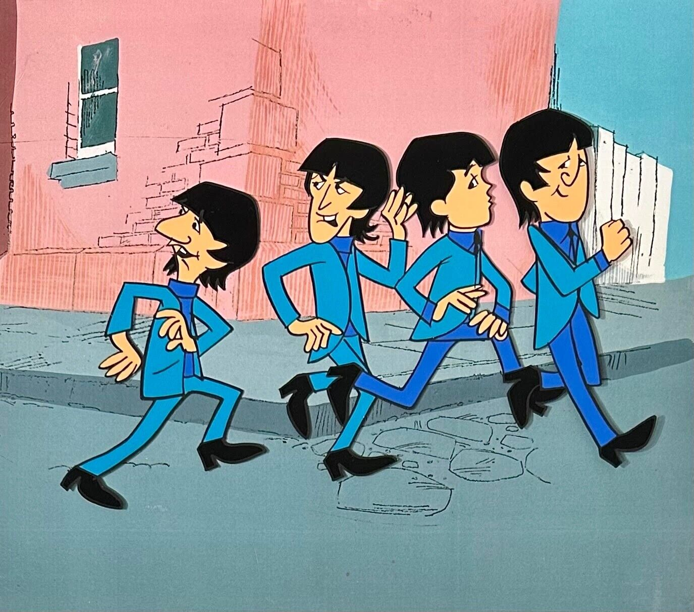
四人奔跑 · 原始动画稿
原始动画稿照片 · 1375 × 1215
保留下载文件的像素尺寸；未做放大或 AI 修复。下载原尺寸文件 · 查看来源网页
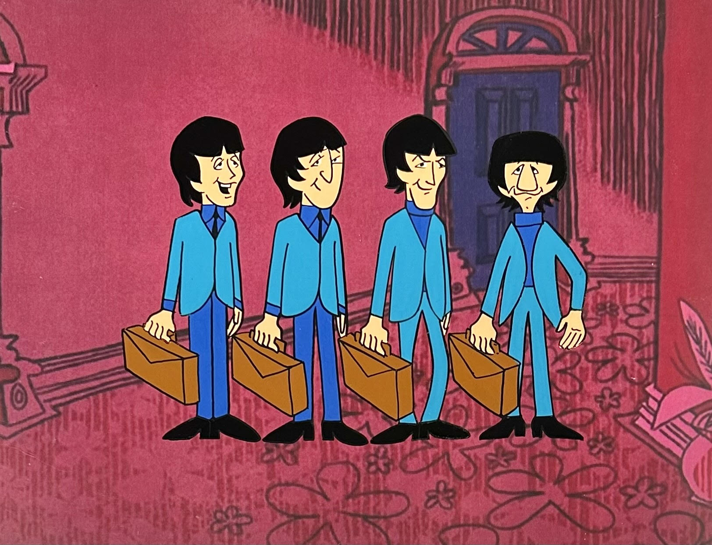
四人全身 · 手提箱
原始动画稿照片 · 1624 × 1245
保留下载文件的像素尺寸；未做放大或 AI 修复。下载原尺寸文件 · 查看来源网页
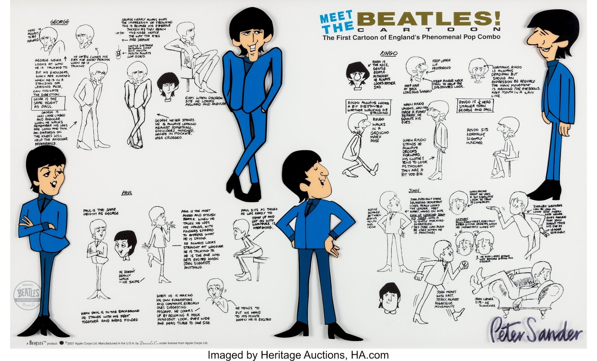
四人造型、姿势与设定 · 2007 授权复刻
角色设定复刻 · 1600 × 968
保留下载文件的像素尺寸；未做放大或 AI 修复。下载原尺寸文件 · 查看来源网页

Ringo 动态姿势
原始动画稿照片 · 1744 × 1353
保留下载文件的像素尺寸；未做放大或 AI 修复。下载原尺寸文件 · 查看来源网页

Ringo 奔跑与鼓棒
原始动画稿照片 · 1550 × 1196
保留下载文件的像素尺寸；未做放大或 AI 修复。下载原尺寸文件 · 查看来源网页
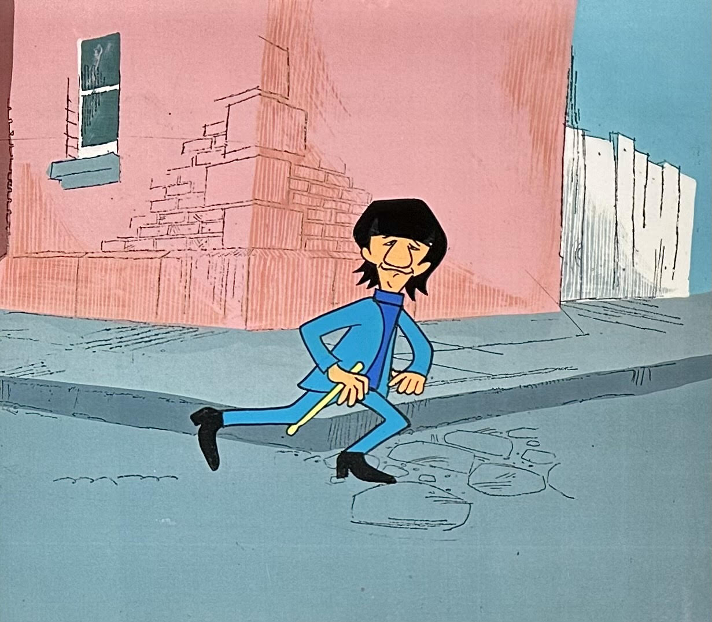
Ringo 另一奔跑姿势
原始动画稿照片 · 1231 × 1074
保留下载文件的像素尺寸；未做放大或 AI 修复。下载原尺寸文件 · 查看来源网页
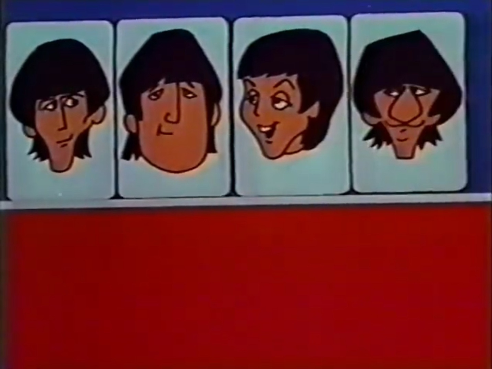
四人头部肖像 · George / John / Paul / Ringo
原片截图 · 2077 × 1561
保留下载文件的像素尺寸；未做放大或 AI 修复。下载原尺寸文件 · 查看来源网页

魔术帽场景 · 表情对照
原片截图 · 882 × 632
保留下载文件的像素尺寸；未做放大或 AI 修复。下载原尺寸文件 · 查看来源网页

Penny Lane 场景 · 全身与手势
原片截图 · 1969 × 1486
保留下载文件的像素尺寸；未做放大或 AI 修复。下载原尺寸文件 · 查看来源网页

四人演奏 · 原片画面
原片截图 · 1966 × 1453
保留下载文件的像素尺寸；未做放大或 AI 修复。下载原尺寸文件 · 查看来源网页

四人举手与庆祝姿势
原片截图 · 800 × 600
保留下载文件的像素尺寸；未做放大或 AI 修复。下载原尺寸文件 · 查看来源网页
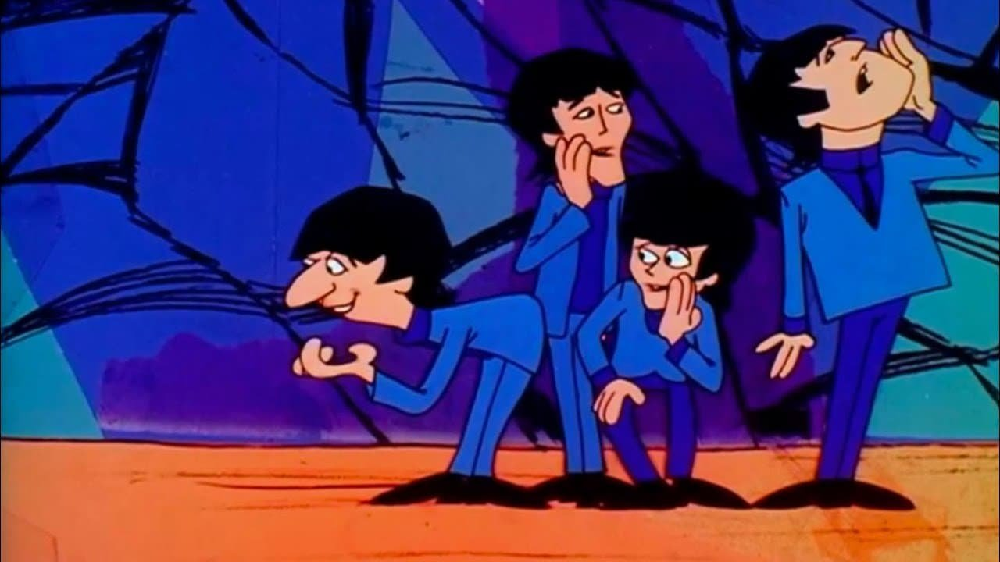
四人思考与等待姿势
原片截图 · 1280 × 720
保留下载文件的像素尺寸；未做放大或 AI 修复。下载原尺寸文件 · 查看来源网页

四人脸型与服装对照
宣传参考 · 900 × 400
保留下载文件的像素尺寸；未做放大或 AI 修复。下载原尺寸文件 · 查看来源网页
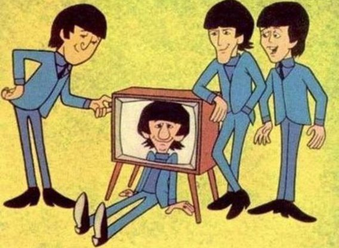
电视机场景 · 全身
原片画面参考 · 568 × 416
保留下载文件的像素尺寸；未做放大或 AI 修复。下载原尺寸文件 · 查看来源网页
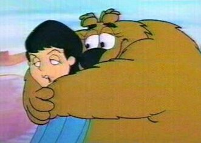
screenshot-archive-beatles01
低清补充画面 · 331 × 236
低分辨率，仅供构图与剧情参考。下载原尺寸文件 · 查看来源网页
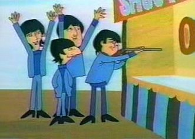
screenshot-archive-beatles02
低清补充画面 · 331 × 236
低分辨率，仅供构图与剧情参考。下载原尺寸文件 · 查看来源网页
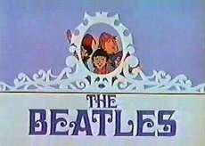
screenshot-archive-beatles031
低清补充画面 · 230 × 164
低分辨率，仅供构图与剧情参考。下载原尺寸文件 · 查看来源网页
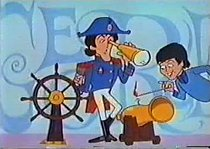
screenshot-archive-beatles04
低清补充画面 · 210 × 149
低分辨率，仅供构图与剧情参考。下载原尺寸文件 · 查看来源网页
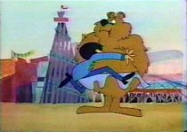
screenshot-archive-beatles05
低清补充画面 · 210 × 149
低分辨率，仅供构图与剧情参考。下载原尺寸文件 · 查看来源网页

screenshot-archive-beatles06
低清补充画面 · 210 × 149
低分辨率，仅供构图与剧情参考。下载原尺寸文件 · 查看来源网页